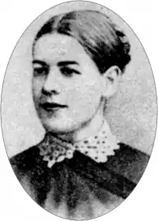

Грицько Григоренко (справжнжє ім'я Олександра Євгенівна Судовщикова-Косач; березень 1867 — 27 квітня 1924) — українська письменниця, перекладачка, громадська діячка. Дружина Михайла Косача, брата Лесі Українки.
Народилася в місті Макар'єв (нині місто Костромської області, РФ) у сім'ї вчителя Є. Судовщикова, який був другом Михайла Драгоманова. Від 1868 разом із матір'ю жила в родині Драгоманових. Закінчила гімназію, від 1885 навчалася на історико-філософському відділі Вищих жіночих курсів (Київ). Належала до кола молоді, яка гуртувалася навколо Лесі Українки; влітку відпочивала в родині Косачів на Полтавщині та Волині. 12 вересня 1893 одружилася з Михайлом Косачем і виїхала з ним до міста Дерпт (нині Тарту, Естонія), де він закінчував університет і залишився працювати на фізико-математичному факультеті. Там же видала першу збірку імпресіоністичних оповідань "Наші люди на селі" (1898), яку прихильно зустріли Іван Франко та Леся Українка, хоч і критикували за песимізм.
Від 1901 подружжя жило в Харкові. 1903 року, після смерті чоловіка, Григоренко повернулася до Києва, закінчила юридичні курси, працювала в суді, була діячкою Товариства захисту працюючих жінок. Через невдоволення роботою переїхала до м. Гадяч, де займалася домашнім учителюванням і творчою працею. Співпрацювала з київською газетою "Рада", періодичними виданнями "Рідний край", "Літературно-науковий вістник", "Молода Україна". Оселившись у Могильові (нині місто Могилів-Подільський) разом із Оленою Пчілкою, жила з дрібних заробітків. Автор натуралістичних оповідань переважно з українського селянського побуту, а також робітничого життя ("Смерди", "Пересельці", "Ніяк не вмре", "Чи по правді?", "Людям", "Машиніст" та ін.); оповідань для дітей (збірка "Дітки", 1918), п'єс ("Яблука", 1918; "Дімин сон", опублікована 1930), спогадів "Хаос", знайдених лише 1980 року (рукопис зберігається у фондах Київського музею Лесі Українки). Створила галерею розмаїтих психологічних портретів селян та українських інтелігентів. Перекладала літературні твори з французької, англійської та шведської мов. Переклала на французьку комедію "Одруження" Миколи Гоголя. Похована була на Кудрявському кладовищі у Києві. Матеріали про життя і творчість Грицька Григоренка зберігаються у відділі рукописів Інституту літератури ім. Т. Шевченка НАН України (фонд № 45).